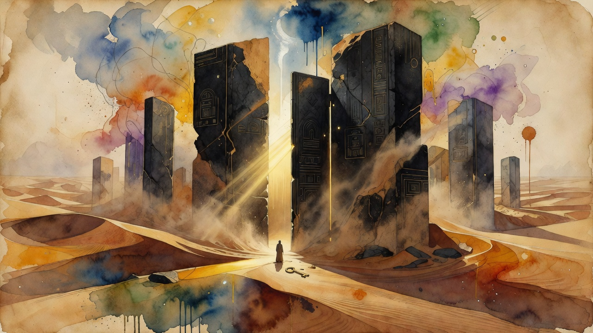

Critical threshold breached
OpenAI announces Astra release — first model to cross Critical cybersecurity capability threshold
OpenAI announced Astra is the first model to meet the Critical cybersecurity capability threshold under its Preparedness Framework, capable of autonomously finding zero-day vulnerabilities. Launch safeguards include stronger cyber abuse protections, alignment training against misbehavior, and limited initial access through alpha testers and Daybreak Blue. Sam Altman published a reflection on the tension between progress speed and safety.